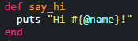
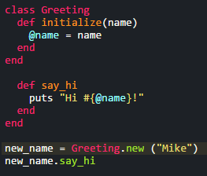

Ruby Classes
Using a class and its components
December 20, 2015
Welcome back to my blog! This week we will be covering Ruby classes and what exactly they are and some of their components.
To start, a class is essentially a blue print or layout from which individual objects are created. That may be a little bit confusing, but some classes that we have already been dealing with are the String class and the Integer class. For example, the integers 1, 2, 3, etc. all belong to the Integer class and strings "Hi", "Hello", and "Insert text here" all belong to the String class. Each class has a number of built in methods within it that we can call to modify the variable or get it to perform what we want it to. The String and Integer classes are some built in Ruby classes that have built in methods, but we are also able to create our own class with our own set of methods!
To create our new class, we simply type class and the name of our class right after it. Class names should be capitalized. After that we want to define a method to initialize the class which we will call initialize and it can take an argument which in our example will be name. A picture of our example can be seen below:

You may be wondering what @name is in our initialize method. As you can see I set @name equal to name which is our input for the method. @name is what we call an instance variable. It can be accessed across all methods within a class without us having to set it equal to something within each method. So far our class doesn't really do much, but let's create another method which will say hi. We do this within the class by typing def followed by the method name like so:
Our new method puts "Hi (name input)" to the console. As you can see @name is within the #{} construct and we did not have to set name to equal some variable, because it was set to the input in our initialize method.
We can then end the class creation and create new instance of the class by setting a variable equal to the class name .new and the argument that it is taking. We can then run our newly built in methods such as .say_hi by calling them on our variable.
In this instance I created a variable titled new_name and set it equal to Greeting.new ("Mike") which is our class name followed by the .new method and the argument of my name as a string which is "Mike". If I then wanted to run the say_hi method that we built into the class I can do so by typing new_name.say_hi and running the method on my name. The output for the method call would return exactly what you'd expect and look like this:
We can create new instances of this class using a variety of names and run the same method to output the greeting followed by your name or whatever else we fed in as the argument.
Hopefully this blog served as a brief introduction to classes, instance variables, and instance methods. I know that they can be somewhat difficult to understand and encourage you to read more about them across the numerous resources available online. Thank you for reading, and I look forward to introducing you to another topic soon!